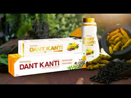
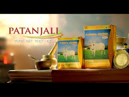

How India's FMCG disruptor reshaped categories through Ayurveda trust, aggressive pricing, and cultural alignment — building a mass empire.
Patanjali reshaped entire categories by introducing Ayurveda trust, aggressive pricing, and cultural alignment instead of competing with traditional FMCG playbooks. The brand identified gaps between consumer beliefs and market offerings, then filled them aggressively.
What made Patanjali explosive was combining belief-driven positioning, Baba Ramdev's authority, and distribution scale — creating self-reinforcing growth loops.
This analysis covers two powerhouse campaigns: Dant Kanti Toothpaste — a mature market disruption — and Cow's Ghee — dominating a traditional staple through trust and accessibility.
At a time when oral care focused on whitening and global positioning, Dant Kanti disrupted with Ayurveda, natural ingredients, and Swadeshi pride — targeting price-sensitive families seeking healthier alternatives.
The positioning was brutally simple: herbal protection at lower prices than chemical toothpastes. Baba Ramdev's authority created instant credibility through educational, demonstration-led communication across TV, yoga camps, and digital.
"Patanjali didn't sell toothpaste — it sold trust in Ayurveda at mass prices. This belief-price combination created explosive category disruption."
Hybrid distribution through Arogya Kendras, general trade, and news channels ensured accessibility. The funnel was perfect: Ramdev's credibility → herbal promise → aggressive pricing → daily habit formation.

Ghee is embedded in Indian rituals, wellness, and cooking. Patanjali standardized quality while maintaining authenticity, positioning as the most trusted branded option in a fragmented market.
The messaging expanded relevance beyond cooking — positioning ghee for food, Ayurveda, and rituals. Simple, honest communication reinforced familiarity and purity without over-branding.
"In staple categories, trust + availability beats premium positioning. Patanjali captured massive existing demand through credibility and scale."
Existing category awareness + strong retail network created natural funnel flow. Trial was easy for a staple product, retention came from frequent usage. Distribution scale converted trust into dominant market share.

Ayurveda trust existed but lacked affordable mainstream products — Patanjali filled this gap aggressively across categories.
Baba Ramdev's wellness authority created instant trust that no celebrity endorsement could match — educational communication built belief.
Lower prices than competitors with equal/better perceived quality created trial velocity and habit formation at mass scale.
Arogya Kendras + general trade + news channel dominance ensured products were everywhere consumers looked and shopped.
No over-branding or complexity — direct communication of purity, trust, and natural benefits resonated with mass households.
Aggressive ad frequency + distribution scale created self-reinforcing growth before competitors could react effectively.
Patanjali's genius was identifying gaps between consumer beliefs and market reality. Dant Kanti gave Ayurveda believers affordable oral care. Cow's Ghee gave staple buyers trusted branding.
The repeatable formula: cultural truth + authority figure + aggressive pricing + distribution scale = explosive growth. Modern brands can replicate by finding similar belief-market disconnects.
Success came from simplicity and speed — clear messaging, rapid scaling before competition reacted. This challenger strategy reshaped Indian FMCG forever.
At Brand Business Talk, we help brands with research, strategy, market insights, and growth recommendations. Let's build your brand growth strategy together.